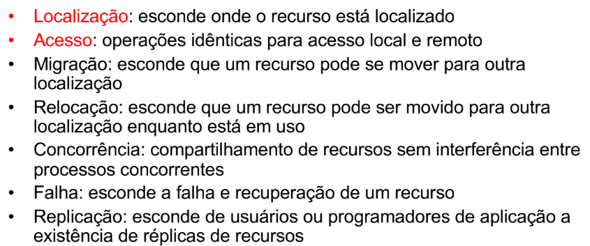

INTRODUÇÃO À SISTEMAS DISTRIBUÍDOS E REDES DE COMPUTADORES¶
Sistemas Distribuídos¶
Existem diversas definições sobre o que é um sistema distribuído, que evoluíram conforme a área avançou.
Definição clássica: um sistema operacional distribuído é aquele que aparece para os usuários como um sistema centralizado ordinário, mas que executa em múltiplas CPUs independentes. O conceito primordial aqui é a transparência — o sistema é idealmente visto como um único "uniprocessador virtual", e não como uma coleção de máquinas distintas.
A transparência se manifesta em várias dimensões, cada uma escondendo um aspecto diferente da distribuição:
- Localização: esconde onde o recurso está localizado.
- Acesso: operações idênticas para acesso local e remoto.
- Migração: esconde que um recurso pode se mover para outra localização.
- Relocação: esconde que um recurso pode ser movido para outra localização enquanto está em uso.
- Concorrência: compartilhamento de recursos sem interferência entre processos concorrentes.
- Falha: esconde a falha e recuperação de um recurso.
- Replicação: esconde de usuários ou programadores de aplicação a existência de réplicas de recursos.
Imagem de referência (slide)

Definição moderna: um sistema distribuído é uma coleção de sistemas computacionais em rede, nos quais processos e recursos estão espalhados por diferentes computadores.
Propriedades fundamentais¶
Os sistemas distribuídos (SDs) são construídos com o objetivo de melhorar o desempenho de um sistema computacional em termos de confiabilidade, escalabilidade e eficiência:
| Propriedade | Descrição |
|---|---|
| Confiabilidade | O sistema pode funcionar continuamente, sem falhas, permitindo realizar mais trabalho na mesma quantidade de tempo |
| Paralelismo | Várias computações podem ser realizadas simultaneamente, aumentando a vazão do sistema |
| Disponibilidade | Os SDs possuem capacidade de replicação e redundância |
| Escalabilidade | Permite adicionar mais usuários e recursos ao sistema sem perda perceptível de desempenho |
| Expansibilidade e Modularidade | Suportam crescimento incremental |
| Natureza humana e informacional | Pessoas e informações já são naturalmente distribuídas, gerando o desejo de comunicar e compartilhar informações e recursos |
Sistemas distribuídos são a base fundamental de grande parte das aplicações computacionais atuais, servindo de alicerce para os sistemas de computação ubíqua — exemplos incluem cidades inteligentes, sistemas digitais de saúde e sistemas de streaming. Um SD bem projetado tem o potencial de ser muito mais poderoso que um sistema centralizado convencional.
Computação Ubíqua
É a onipresença da computação, de forma que ela se torne invisível no cotidiano das pessoas — tudo conectado, em todo lugar, o tempo todo. Ela é viabilizada pelos sistemas distribuídos, que formam a espinha dorsal que permite conectar, processar e adaptar dados em escala para realizá-la.
Essa onipresença exige dinamicidade e adaptação constante às mudanças no ambiente operacional e no mundo real. Isso se relaciona ao conceito de Context Awareness: a capacidade de um sistema perceber informações relevantes do ambiente (localização, tempo, rede disponível, etc.), interpretá-las e adaptar seu comportamento automaticamente. É um desafio que o SD precisa superar por meio de ferramentas, técnicas, paradigmas e linguagens de programação adequados.
Centralizado vs. Descentralizado vs. Distribuído¶
Imagem de referência (diagrama dos três modelos como grafos de nós)

| Modelo | Definição | Observações |
|---|---|---|
| Centralizado | Um único nó/entidade controla e executa tudo | Costuma-se dizer que sistemas centralizados não escalam bem; mas uma solução logicamente centralizada pode ser implementada de forma distribuída e altamente escalável (ver exemplo do DNS abaixo) |
| Descentralizado | Há vários controladores (múltiplas entidades/autonomias) | Um sistema descentralizado só é considerado distribuído quando os nós de entidades distintas efetivamente cooperam via protocolo para entregar uma funcionalidade composta ao usuário. Se cada entidade opera isolada, há apenas vários sistemas centralizados separados — não um sistema distribuído |
| Distribuído | O sistema roda em múltiplos nós que cooperam via rede para parecer um só | Diz-se que sistemas distribuídos são mais robustos contra falhas |
DNS: logicamente centralizado, fisicamente distribuído
O DNS (Domain Name System) traduz nomes de domínio para endereços IP numéricos, que os computadores usam para se encontrar e se comunicar.
Imagem de referência (árvore de nomes do DNS)

É um sistema hierárquico, distribuído, mas administrado de forma centralizada: sua raiz é logicamente centralizada, mas fisicamente distribuída e descentralizada entre diversas organizações. A hierarquia vai de Raiz (gerida pela IANA/ICANN, conhece quais servidores respondem por cada TLD) → TLD → Zona Delegada (recorte da árvore com autoridade sobre seus próprios nomes) → Subdomínios.
TLD (Top Level Domain): é a extensão de um nome de domínio, como .com ou .org, que vem após o último ponto de uma URL — funciona como uma categoria dentro do DNS, indicando o propósito ou a origem de um site. Existem centenas de milhares de TLDs, divididos em:
- gTLDs (Generic Top-Level Domains): extensões como
.com,.org,.net,.biz,.info. - ccTLDs (Country Code Top-Level Domains): códigos de país, como
.br(Brasil),.pt(Portugal) ou.de(Alemanha). - sTLDs (Sponsored Top-Level Domains): domínios patrocinados por uma entidade específica que os gerencia, como
.gov(governos) e.edu(instituições educacionais). - Novos gTLDs: TLDs mais recentes que identificam segmentos específicos, como
.techou.fashion.
Apesar dessa estrutura, há coordenação central da raiz: ela é gerida e publicada por uma rede global de "13" letras de servidores-raiz, com centenas de instâncias anycast cada.
- A–M root servers: a zona raiz do DNS é servida por 13 identificadores lógicos de servidor, de
a.root-servers.netatém.root-servers.net— 13 servidores-raiz lógicos, cada um com operador próprio. Cada letra é, na prática, um conjunto de muitas máquinas espalhadas pelo mundo; quem opera cada letra e seus IPs são informações publicadas pela IANA. - Anycast: técnica de endereçamento/roteamento em que o mesmo IP é anunciado por múltiplos locais. A internet, via BGP, encaminha o pacote para a instância mais próxima (segundo a métrica de roteamento), reduzindo a latência e distribuindo carga e ataques. No contexto dos A–M root servers, cada letra tem centenas de instâncias anycast no mundo, todas respondendo pelo mesmo IP — o que resulta em resiliência (se uma cai, o tráfego converge para outra) e bom desempenho.
- BGP (Border Gateway Protocol): protocolo de roteamento entre sistemas autônomos da internet — é o que mantém a internet conectada. Cada provedor/rede grande tem um Sistema Autônomo (AS), e o BGP serve para anunciar e escolher rotas para prefixos IP entre esses sistemas, com base em políticas (não apenas "o caminho mais curto"). Existem duas variantes: eBGP (troca entre roteadores em ASs diferentes) e iBGP (troca entre roteadores dentro do mesmo AS). É amplamente usado em engenharia de tráfego, anycast, interconexão de ISPs e acordos de peering/transit.
- ISP (Internet Service Provider): empresa que fornece a infraestrutura e os serviços necessários para que usuários e empresas se conectem à internet.
- O BGP tem riscos de route leaks (quando uma rota válida é propagada indevidamente onde não deveria aparecer) e hijacks (anúncio não autorizado de um prefixo por um AS que não é sua origem legítima), mitigados com RPKI — infraestrutura de chaves públicas que vincula recursos IP a seus detentores legítimos, autorizando quem pode anunciar qual prefixo e permitindo bloquear prefixos inválidos nos roteadores.
- BGP (Border Gateway Protocol): protocolo de roteamento entre sistemas autônomos da internet — é o que mantém a internet conectada. Cada provedor/rede grande tem um Sistema Autônomo (AS), e o BGP serve para anunciar e escolher rotas para prefixos IP entre esses sistemas, com base em políticas (não apenas "o caminho mais curto"). Existem duas variantes: eBGP (troca entre roteadores em ASs diferentes) e iBGP (troca entre roteadores dentro do mesmo AS). É amplamente usado em engenharia de tráfego, anycast, interconexão de ISPs e acordos de peering/transit.
Modelos de Sistemas Distribuídos¶
A evolução dos modelos de SD acompanhou a evolução do compartilhamento de recursos computacionais, partindo de um único processo sequencial sobre um SO/hardware isolado, passando por múltiplos processos multi-threaded (concorrentes, mas ainda numa só máquina), até múltiplos processos comunicantes entre máquinas diferentes ligadas por uma rede — cada máquina rodando seu próprio SO sobre seu próprio hardware, mas cooperando via comunicação em rede.
Imagem de referência (evolução sequencial → multi-thread → múltiplas máquinas em rede)


Modelo Cliente/Servidor¶
O cliente faz um request e o servidor fornece o serviço, respondendo com um reply. Esse padrão de comunicação é chamado de protocolo Request-Reply (RR): há um acoplamento lógico entre a pergunta e a resposta. É simples de entender e depurar, permite backpressure fácil via timeouts e filas, e aparece por trás de mensageria, streams, HTTP/REST e RPC.
O ciclo do protocolo RR é:
- Request: o cliente envia uma mensagem — payload,
correlationId,replyTo,timeout. - Processamento: o servidor recebe e executa a operação.
- Reply: o servidor responde (no mesmo canal ou em
replyTo), preservando ocorrelationId. - Casamento: o cliente associa a resposta ao pedido original, tratando sucesso, erro ou timeout.
O modelo cliente/servidor é tipicamente 1:N (um servidor para vários clientes). O servidor não precisa saber muito sobre o cliente, mas o cliente precisa conhecer o servidor — este compartilha seus recursos com aquele.
Imagem de referência (ciclo request/reply entre processo cliente e servidor)

Modelo P2P (Peer-to-Peer)¶
Todos os nós (peers) podem atuar simultaneamente como clientes e servidores, compartilhando recursos diretamente entre si, com mínima dependência de um servidor central. Os papéis são simétricos — cada peer oferece e consome. O modelo escala horizontalmente com a quantidade de participantes, embora a coordenação seja mais complexa. É vantajoso para distribuição em massa, redução de custo central e tolerância a churn (taxa de rotatividade de participantes).
Quando evitar P2P
Evite P2P se o sistema precisa de controle forte centralizado, lida com dados ultra-sensíveis, ou precisa de uma SLA rígida.
SLA (Service Level Agreement): acordo formal entre provedor e cliente que define os níveis mínimos de serviço esperados e as consequências caso não sejam cumpridos — inclui escopo do serviço, metas, métricas, governança, suporte, prazos e exclusões.
Tipos de redes P2P:
- Puro (Descentralizado): sem servidor central.
- Híbrido: há componentes centrais apenas para descoberta/coordenação.
- Estruturado (DHT): usa tabelas de hash distribuídas para localizar recursos em \(O(\log N)\).
Imagem de referência (rede baseada em servidor vs. rede peer-to-peer)

Desafios dos Sistemas Distribuídos¶
Projetar um SD envolve lidar com uma série de desafios inerentes:
- Heterogeneidade: hardware, sistemas operacionais, linguagens e redes diferentes precisam interoperar.
- Transparência: ocultar do usuário o fato de que o sistema é distribuído.
- Tolerância a falhas: continuar funcionando mesmo com a falha de componentes individuais.
- Segurança: proteger dados e comunicações entre nós não confiáveis.
- Concorrência: múltiplos processos acessando recursos compartilhados simultaneamente.
- Escalabilidade: capacidade de o sistema reagir bem e atender a uma nova realidade (carga maior ou menor), sem apresentar problemas de desempenho.
- Abertura: um SD aberto oferece serviços de acordo com regras padronizadas (ex: APIs públicas), o que facilita a adição de novos componentes ao sistema.
Invocação Remota¶
Desafios da transmissão de dados¶
Dados dentro de um programa são estruturados (objetos, registros), enquanto mensagens de rede transportam informação como um fluxo sequencial de bytes. Para que diferentes componentes ou nós de um sistema se comuniquem, existem os conceitos de marshalling e unmarshalling.
Marshalling: processo de converter um objeto ou estrutura de dados em um formato que possa ser enviado pela rede ou armazenado — uma linearização de uma coleção de itens de dados estruturados, traduzindo-os para um formato externo (ex: XDR, eXternal Data Representation).
Exemplo: uma árvore binária com os valores 6, 5, 2, 8, 7, 9 (raiz 6, filhos 5 e 8, netos 2, 7 e 9) é percorrida e linearizada em um array sequencial [6, 5, 2, 8, 7, 9], que é o formato que pode ser transmitido pela rede.
Imagem de referência (árvore → array linearizado)

Unmarshalling: o processo inverso — converter os dados recebidos de volta para um formato usável pelo sistema local, restaurando os itens de dados de acordo com sua estrutura original.
Seguindo o exemplo: o array [6, 5, 2, 8, 7, 9] recebido pela rede é reconstruído de volta na árvore binária original (raiz 6, filhos 5 e 8, netos 2, 7 e 9).
Imagem de referência (array linearizado → árvore reconstruída)

Diferentes sistemas (escritos em diferentes linguagens ou plataformas) precisam entender uns aos outros, e marshalling/unmarshalling garantem que os dados possam ser convertidos para um formato universal e depois desconvertidos adequadamente.
Heterogeneidade de representação: computadores diferentes podem representar dados de formas distintas — em particular, na ordem dos bytes de um valor multi-byte.
-
Big-endian: o byte mais significativo é armazenado/transmitido primeiro, no endereço de memória mais baixo. É o formato padrão de muitos protocolos de rede, chamado de "ordem de rede".
Exemplo: para o valor
n = 0x01020304(byte 0 =0x01, byte 1 =0x02, byte 2 =0x03, byte 3 =0x04), o push para a memória é feito do byte 0 ao byte 3, na ordem em que aparecem — resultando emnarmazenado em memória exatamente como0x01 0x02 0x03 0x04.Imagem de referência (passo a passo do push em big-endian)

-
Little-endian: o byte menos significativo é armazenado/transmitido primeiro. É o formato predominante nas arquiteturas x86, base da maioria dos PCs modernos.
Exemplo: para o mesmo valor
n = 0x01020304, o push para a memória é feito do byte 3 ao byte 0 (ordem invertida) — resultando emnarmazenado em memória como0x04 0x03 0x02 0x01.Imagem de referência (passo a passo do push em little-endian, comparado ao big-endian)

Para contornar essa ambiguidade, costuma-se incluir uma identificação de arquitetura diretamente na mensagem.
Remote Procedure Call (RPC)¶
RPC é a execução de um procedimento em um espaço de endereço diferente do que o chamou: um programa faz com que um procedimento (sub-rotina) seja executado remotamente, mas escrito como se fosse uma chamada de procedimento local. A ideia central é que o programador escreva o código como se fosse uma chamada local — uma forma de interação cliente-servidor que integra os mecanismos de RPC com programas escritos em uma linguagem convencional. É um primitivo de linguagem eficiente para construir sistemas distribuídos.
Stubs: componentes que facilitam a comunicação entre cliente e servidor. Um stub fica no lado do cliente, atuando como um proxy para o objeto remoto, e é responsável por empacotar as chamadas de método e enviar os dados pela rede — cuidando de transparência de acesso, tratamento local de algumas exceções, marshalling e unmarshalling.
Imagem de referência (stub do cliente e do servidor ligados pela rede)

Skeleton: fica no lado do servidor, recebendo a chamada do stub, desempacotando os dados, invocando o método real no objeto servidor e devolvendo o resultado. Stubs e skeletons juntos simplificam a comunicação, abstraindo detalhes como serialização de dados e comunicação em rede.
Chamadas e mensagens em RPC: o fluxo completo de uma chamada remota, do lado do cliente ao lado do servidor, segue estes passos:
- O cliente (processo 0) chama o stub do cliente, que intercepta a chamada.
- O stub do cliente empacota os parâmetros (marshalling).
- O stub do cliente envia a mensagem de request ao servidor, através do núcleo (kernel).
- O kernel do servidor recebe a mensagem de request.
- O stub do servidor desempacota os parâmetros (unmarshalling).
- O stub do servidor chama o procedimento real, passando os parâmetros já desempacotados.
- Após a execução, o stub do servidor empacota o resultado.
- O stub do servidor envia a mensagem de reply ao cliente, através do kernel.
- O kernel do cliente recebe a mensagem de reply.
- O stub do cliente desempacota o resultado.
- O stub do cliente passa o resultado para o cliente.
Imagem de referência (diagrama numerado da chamada RPC cliente ↔ servidor)

O módulo de comunicação usa um protocolo request-reply para a troca de mensagens entre cliente e servidor. A mensagem de aplicação (ex: res = srv.Soma(a, b)) é encapsulada nesse protocolo através de operações específicas:
DoOperation: do lado do cliente, empacota a chamada em uma mensagem de request (res = request(clt, srv, msg)) e a envia.GetRequest: do lado do servidor, recebe a mensagem de request.SendReply: do lado do servidor, depois de executar a operação (res = Soma(a,b)), envia a mensagem de reply de volta ao cliente.
Imagem de referência (operações DoOperation / GetRequest / SendReply do protocolo request-reply)

Passagem de parâmetros: ao chamar k = add(i, j), o fluxo entre as máquinas cliente e servidor é:
- O processo cliente faz a chamada ao procedimento
add. - O stub do cliente constrói a mensagem com o nome do procedimento (
proc: "add") e os valores dos parâmetros (int: val(i),int: val(j)). - A mensagem é enviada pela rede, através do SO cliente e do SO servidor.
- O SO do servidor entrega a mensagem ao stub do servidor.
- O stub do servidor desempacota a mensagem.
- O stub do servidor faz a chamada local real a
add, dentro do processo servidor.
Imagem de referência (passagem de parâmetros cliente → servidor, passo a passo)

Ligação (Binding): o mecanismo de RPC possui um binder para resolução de nomes, permitindo ligação dinâmica (de nome para endereço, em tempo de execução) e transparência de localização.
Remote Method Invocation (RMI)¶
É a representação do RPC no paradigma de programação orientada a objetos — a mesma ideia de invocação remota, mas operando sobre objetos e métodos, em vez de procedimentos soltos.
Exemplo clássico em pseudo-Java: uma classe HelloWorld com um método local sayHello() que imprime "Hello World!". No modelo RMI, o servidor registra o objeto remoto (Naming.rebind("hello", this)), e o cliente obtém uma referência remota a esse objeto (Naming.lookup("rmi://hostB/Hello")) e chama hello_server.sayHello() como se fosse uma chamada local — mas a chamada de fato atravessa a rede até o objeto remoto no servidor. É importante lembrar, aqui, das transparências de localização e de acesso (vistas no início do capítulo): o cliente não precisa saber onde o objeto está, nem que a chamada é remota.
Imagem de referência (exemplo de código RMI: classe local, servidor e cliente)

Middleware¶
É a camada intermediária que se situa entre as aplicações e os sistemas operacionais de rede, abstraindo a complexidade da comunicação distribuída. Ela pode ser organizada em diferentes arquiteturas, dependendo de onde a lógica de distribuição é implementada:
- Sistemas Operacionais Distribuídos: cada máquina roda um kernel próprio, e por cima dele há "serviços de sistema operacional distribuído" (
Distributed operating system services) compartilhados entre as máquinas, sobre os quais rodam as aplicações distribuídas. - Sistemas Operacionais de Rede: cada máquina mantém seu próprio kernel e seus próprios "serviços de SO de rede" (
Network OS services) de forma mais independente, com as aplicações distribuídas ficando por cima. - Middleware: uma camada de middleware services roda por cima dos serviços de SO de rede de cada máquina, oferecendo uma abstração comum às aplicações distribuídas.
Observação da imagem original
Hoje em dia, os Sistemas Operacionais de Rede (SORs) estão sendo ressignificados/reconceituados para dar suporte à programação de redes — exemplos citados: NOX, Onix e ONOS.
Imagem de referência (três arquiteturas: SO distribuído, SO de rede, middleware)

Os principais tipos de middleware são:
- RPC (visto acima).
-
Message-Oriented Middleware (MOM): comunicação baseada em troca de mensagens, nos paradigmas de publish-subscribe — onde publicadores enviam eventos (
publish(e1),publish(e2),advertise(t1)) para o sistema, e assinantes recebem o que lhes interessa (subscribe(t1),subscribe(t2),notify(e1)):Imagem de referência (sistema publish-subscribe)

ou de fila de mensagens — onde produtores enviam (
Send) mensagens para filas, e consumidores as recebem (Receive), consultam (Poll) ou são notificados (Notify):Imagem de referência (sistema de fila de mensagens)

-
Object-Oriented Middleware (OOM): fornece referências para objetos-servidores, tarefas e serviços. Dois exemplos clássicos:
- DCOM (Distributed Component Object Model): tecnologia proprietária da Microsoft para comunicação entre componentes de software distribuídos em rede.
- CORBA (Common Object Request Broker Architecture): arquitetura padrão criada pela Object Management Group (OMG) para estabelecer e simplificar a troca de dados entre sistemas distribuídos heterogêneos, padronizando a comunicação entre eles.
CORBA em detalhe¶
O CORBA é baseado na definição de interfaces de objetos com a IDL (Interface Definition Language) — uma linguagem declarativa, independente de linguagem de programação, que descreve operações e atributos sem conter lógica de programação. A independência de linguagem permite que interfaces sejam implementadas em Java, C++ etc., exigindo um compilador que traduza as especificações IDL para a linguagem específica, permitindo interoperabilidade entre sistemas em diferentes linguagens.
Object Request Broker (ORB): componente central que atua como intermediário (barramento) entre cliente e servidor, permitindo comunicação entre plataformas e linguagens diferentes e facilitando a integração distribuída, transparente e independente de linguagem. É responsável por localizar o objeto, transmitir a requisição e retornar a resposta.
- Núcleo do ORB: lida com a representação básica de objetos e a comunicação.
- Interface do ORB: fornece operações para manipulação de informações do próprio ORB.
- Inclui stubs, skeletons e o POA (Portable Object Adapter), que ajuda componentes em diferentes linguagens e máquinas a se comunicarem.
A arquitetura completa conecta o Cliente e o Objeto (Servant) ao núcleo do ORB por caminhos diferentes:
- O Cliente chama através da Interface de Invocação Dinâmica (DII) ou de Stubs Estáticos, passando pela Interface do ORB.
- O Objeto (Servant) é acessado através de Esqueletos Estáticos ou da Interface de Esqueletos Dinâmicos (DSI), e pelo Adaptador de Objetos (o POA).
- O Núcleo do ORB se conecta a um Repositório de Interfaces (metadados das interfaces IDL) e a um Repositório de Implementações (informações sobre os objetos-servidor em execução).
Imagem de referência (arquitetura do ORB: DII, stubs, esqueletos, POA e repositórios)

Etapas de um sistema CORBA:
- Definição da interface em IDL.
- Geração de código-fonte (stubs e skeletons).
- Implementação do objeto no servidor — os skeletons gerados (em uma linguagem mapeada) são usados para implementar a lógica real do objeto, isto é, o código que executa as operações definidas na IDL.
- Cliente acessa operações via stubs — sem precisar conhecer os detalhes de implementação do servidor.
- Comunicação intermediada pelo ORB.
Exemplo cliente-servidor simples em CORBA
O cliente envia um número ao servidor, que responde com a string Hello <número>. O exemplo está estruturado em três partes: (1) interface CORBA em IDL, (2) servidor em C++ implementando a lógica Hello <número>, (3) cliente em C++ enviando o número e recebendo a resposta.
Imagem de referência (diagrama cliente/servidor do exemplo)

Servidor em C++ (implementando a lógica Hello<número>):
-
Interface CORBA em IDL — define um módulo
HelloAppcom uma interfaceHelloque tem um único método remotosayHello, recebendo um inteiro (long) e retornando uma string:Imagem de referência

-
Inclusões e namespace —
hello.hhé gerado pelo compilador IDL (omniidl -bcxx hello.idl) e define a interfaceHelloque o servidor implementará:#include <omniORB4/CORBA.h> #include "hello.hh" // Gerado a partir do hello.idl using namespace HelloApp;Imagem de referência

-
Implementação da interface — a classe
Hello_implherda dePOA_Hello(gerada a partir do IDL) e implementa o métodosayHello, que recebe um número inteiro e retorna a string"Hello <número>":class Hello_impl : public POA_Hello { public: virtual char* sayHello(CORBA::Long number) { char buffer[100]; snprintf(buffer, sizeof(buffer), "Hello %ld", number); return CORBA::string_dup(buffer); } };Imagem de referência

-
Inicialização do ORB e POA — inicializa o ORB, obtém referência ao
RootPOA(responsável por gerenciar objetos CORBA no servidor), e oPOAManagercontrola o ciclo de vida do objeto:CORBA::ORB_var orb = CORBA::ORB_init(argc, argv); CORBA::Object_var poaObj = orb->resolve_initial_references("RootPOA"); PortableServer::POA_var poa = PortableServer::POA::_narrow(poaObj); PortableServer::POAManager_var mgr = poa->the_POAManager();Imagem de referência

-
Registro do objeto — cria uma instância de
Hello_impl, registra-a no POA, e obtém a referência CORBA para esse objeto:Hello_impl* hello_servant = new Hello_impl(); PortableServer::ObjectId_var id = poa->activate_object(hello_servant); CORBA::Object_var ref = hello_servant->_this();Imagem de referência

-
Escrita da referência em arquivo — converte a referência do objeto em uma IOR (Interoperable Object Reference, string de identificação CORBA) e a salva em
hello.ior, que será lida pelo cliente:CORBA::String_var ior = orb->object_to_string(ref); FILE* f = fopen("hello.ior", "w"); if (f) { fprintf(f, "%s", ior.in()); fclose(f); }Imagem de referência

-
Execução do servidor — ativa o
POAManagere entra no loop de execução do ORB, aguardando chamadas de clientes:Imagem de referência

-
Tratamento de exceções — captura exceções CORBA:
Imagem de referência

-
Resumo — o código implementa um servidor CORBA em C++ (usando o omniORB) que registra a interface
Hello, escreve sua referência emhello.iore aguarda chamadas de clientes. O cliente, ao usar esse arquivo, pode chamarsayHello(n)e receber a resposta"Hello n".Imagem de referência

-
Código completo do servidor:
#include <stdio.h> #include <stdlib.h> #include <string.h> #include <omniORB4/CORBA.h> #include "hello.hh" // Gerado pelo compilador IDL // (omniidl -bcxx hello.idl) using namespace HelloApp; class Hello_impl : public POA_Hello { public: virtual char* sayHello(CORBA::Long number) { char buffer[100]; snprintf(buffer, sizeof(buffer), "Hello %ld", number); return CORBA::string_dup(buffer); } }; int main(int argc, char** argv) { try { CORBA::ORB_var orb = CORBA::ORB_init(argc, argv); CORBA::Object_var poaObj = orb-> resolve_initial_references("RootPOA"); PortableServer::POA_var poa = PortableServer::POA::_narrow(poaObj); PortableServer::POAManager_var mgr = poa-> the_POAManager(); Hello_impl* hello_servant = new Hello_impl(); PortableServer::ObjectId_var id = poa-> activate_object(hello_servant); CORBA::Object_var ref = hello_servant->_this(); CORBA::String_var ior = orb->object_to_string(ref); FILE* f = fopen("hello.ior", "w"); if (f) { fprintf(f, "%s", ior.in()); fclose(f); } mgr->activate(); orb->run(); } catch (CORBA::Exception& ex) { fprintf(stderr, "Erro no servidor: %s\n", ex._name()); return 1; } return 0; } // FIMImagem de referência

Cliente em C++ (enviando o número e recebendo a resposta):
#include <stdio.h>
#include <stdlib.h>
#include <string.h>
#include <omniORB4/CORBA.h>
#include "hello.hh"
using namespace HelloApp;
int main(int argc, char** argv) {
if (argc != 2) { // Checagem de argumentos
// O cliente precisa receber um número inteiro
// como argumento.
fprintf(stderr, "Uso: %s <numero>\n", argv[0]);
return 1;
}
try {
// Inicialização do ORB
CORBA::ORB_var orb = CORBA::ORB_init(argc, argv);
// Ler referência IOR do arquivo gerado
// quando o servidor foi executado.
FILE* f = fopen("hello.ior", "r");
if (!f) {
fprintf(stderr, "Arquivo hello.ior não encontrado\n");
return 1;
}
char ior[4096];
fscanf(f, "%s", ior);
fclose(f);
// Converte a string do IOR em uma referência CORBA.
CORBA::Object_var obj = orb->string_to_object(ior);
Hello_var hello_ref = Hello::_narrow(obj);
// Faz o narrow para o tipo específico Hello
if (CORBA::is_nil(hello_ref)) {
fprintf(stderr, "Referência do objeto inválida.\n");
return 1;
}
// Garante que o objeto remoto realmente existe.
long num = atol(argv[1]);
CORBA::String_var response = hello_ref->sayHello(num);
printf("Resposta do servidor: %s\n", (char*)response);
// Chamada remota ao servidor: envia o número, recebe
// de volta a string "Hello <numero>" e imprime a resposta.
orb->destroy(); // Finalização
}
catch (CORBA::Exception& ex) {
fprintf(stderr, "Erro no cliente: %s\n", ex._name());
return 1;
}
return 0;
}
O cliente lê a referência do servidor (arquivo hello.ior), chama o método remoto sayHello(n) passando o número fornecido como parâmetro, e exibe a resposta "Hello n".
Imagem de referência (código completo do cliente)


Fluxo de uso:
# Compilar a IDL
omniidl -bcxx hello.idl
# Compilar Servidor e Cliente
g++ -o server server.cpp helloSK.cc -IomniORB4 -IomniDynamic4 -Ipthread
g++ -o cliente cliente.cpp helloSK.cc -IomniORB4 -IomniDynamic4 -Ipthread
# Executar
# Em um terminal:
./server
# Em outro terminal:
./client 42
# Saída esperada: Resposta do servidor: Hello 42
Comunicação via Sockets¶
Sockets são a interface de programação (API) de nível mais baixo para comunicação em rede, geralmente fornecida pelo sistema operacional — são a interface de que o middleware precisa para funcionar. Funcionam como um "terminal" para fluxos de dados, sendo fundamentais para a comunicação na internet.
Fluxo padrão de um servidor TCP:
socket(): cria o ponto de comunicação.bind(): associa o socket a um endereço (IP e porta).listen(): coloca o socket em modo de espera por conexões.accept(): bloqueia e espera até que um cliente se conecte, retornando um novo socket para essa conexão específica.recv()/send(): recebe e envia dados.
Tipos de Comunicação¶
| Tipo | Descrição | Exemplo |
|---|---|---|
| Persistente | A mensagem é armazenada pelo middleware (ex: em uma fila) e entregue mesmo que o receptor esteja offline no momento do envio | |
| Transitória | A mensagem só é armazenada enquanto os processos de envio e recebimento estão ativos | — |
| Síncrona | O remetente envia a mensagem e fica bloqueado, esperando por uma resposta ou aceitação | Chamada RPC tradicional |
| Assíncrona | O remetente envia a mensagem e continua sua execução imediatamente |
Nomeação¶
Trata de como os processos se encontram em um sistema distribuído. Três conceitos fundamentais:
- Nome: uma "etiqueta" legível por humanos, fácil de lembrar (ex:
cin.ufpe.br, "José da Silva"). - Identificador (ID): um "CPF" para entidades do sistema — único, não muda e não tem significado legível (ex: um endereço MAC).
- Endereço: onde o recurso está localizado agora (ex:
192.168.1.1:80).
Nomeação Plana¶
São métodos para localizar entidades que não usam uma estrutura hierárquica.
Broadcasting (Difusão): o cliente envia uma mensagem para todos na rede local (LAN), perguntando "quem é X?".
ARP (Address Resolution Protocol)
Um computador transmite a pergunta "qual endereço MAC corresponde ao IP 141.23.56.23?", e apenas o computador com esse IP responde. A requisição (request) é enviada em broadcast para todos os sistemas da rede local; apenas o sistema com o IP perguntado responde (reply) em unicast, informando seu endereço físico (ex: A4:6E:F4:59:83:AB).
Imagem de referência (ARP request broadcast / reply unicast)

O broadcasting é ineficiente e não escala para redes grandes.
Ponteiros de encaminhamento (Forwarding Pointers): quando uma entidade (ex: um objeto) se move, ela deixa um "rastro" (um ponteiro) em sua localização antiga, apontando para a nova. Esse rastro forma um "histórico de mudanças" — cada vez que a entidade se move (posições 0, 1, 2, 3, 4...), um novo ponteiro liga a localização anterior à nova.
Imagem de referência (cadeia de ponteiros de encaminhamento após sucessivas mudanças)

A limitação é que as cadeias de ponteiros podem ficar longas (aumentando a latência), e se um ponteiro quebrar, a entidade é perdida.
Abordagem "Home-based" (baseada em residência): usada no Mobile IP. Cada entidade móvel tem um endereço "home" fixo; quando ela se move para uma rede visitante, registra seu novo endereço temporário (care-of address) junto a um "agente home" em sua rede de origem. Toda comunicação destinada à entidade é primeiro enviada para seu endereço home, e então encaminhada pelo agente home.
Imagem de referência (endereço home fixo e trajetória de movimentação da entidade)

A limitação é o aumento de latência, pois todo pacote faz um "triângulo" (remetente → home → destino).
Tabelas Hash Distribuídas (DHT): um sistema descentralizado (sem ponto único de falha) e escalável, em que um nome (chave) é passado por uma função hash que determina em qual nó da rede o endereço (valor) está armazenado.
O sistema Chord
O Chord organiza os nós em um anel lógico (ordenados por identificador, ex: de 0 a 31), e cada nó mantém uma finger table: uma pequena tabela de roteamento com \(O(\log N)\) entradas, onde a entrada \(i\) aponta para o sucessor do nó atual \(+ 2^{i-1}\) no anel. Para resolver uma chave \(k\), um nó consulta sua finger table e "salta" para o nó conhecido mais próximo (sem ultrapassar) de \(k\), repetindo o processo até alcançar o nó responsável — por isso a busca é \(O(\log N)\) saltos, em vez de percorrer o anel nó a nó.
No exemplo da imagem: para resolver \(k = 12\) a partir do nó 28, a finger table do nó 28 indica que o próximo salto é o nó 4 (pois \(12 > 28\) "dá a volta" no anel, mas pela tabela o salto mais próximo sem passar é esse); o processo então continua a partir do nó 4 até alcançar o nó responsável. Já para resolver \(k = 26\) a partir do nó 1, a busca segue saltando por nós sucessivamente mais próximos (18, 20, 21) até que o nó 21 reconheça que \(21 < 26 < 28\) e encaminhe para o nó 28 — que então se torna responsável por \(k = 26\).
Imagem de referência (anel Chord com finger tables e exemplo de resolução de chaves)

Nomeação Hierárquica¶
A rede é dividida em domínios e subdomínios, começando por uma raiz única — esta é a abordagem usada pelo DNS.
Serviços de Nomes (Name Service)¶
É o serviço que implementa a nomeação. No modelo de "Páginas Brancas": permite encontrar objetos através de nomes, mapeando Nomes → Referência de Objeto. Essa associação é denominada name binding, e um name context é o espaço onde o nome do objeto é único — nomes são sempre relativos a um name context.
A interface NamingContext (como no CORBA Naming Service) define as operações desse serviço:
bind,rebind: associa um objeto a um nome dentro de um contexto.unbind: remove um objeto de um contexto.new_context: retorna/cria um contexto.bind_new_context: cria um contexto e o associa com um nome fornecido.destroy: apaga um contexto de nome.resolve: recupera um objeto através de um nome em um determinado contexto.
Imagem de referência (conceitos de Páginas Brancas e interface NamingContext)


Seu funcionamento: um servidor (Server) registra um nome associado a sua referência de objeto junto ao Name Server (operação re/bind(name, obj_ref), passo 1), que mantém internamente uma tabela de pares <name, object> (passo 2). Quando um cliente (Client) quer usar esse serviço, ele consulta o Name Server pelo nome (resolve(name), passo 3), que busca na tabela (passo 4) e devolve a referência do objeto; com essa referência em mãos, o cliente finalmente invoca o serviço diretamente no servidor (passo 5).
Imagem de referência (sequência de registro e resolução de nomes via Name Server)

Navegação (Name Resolution): como os espaços de nomes (como o do DNS) são muito grandes, eles são particionados em múltiplos servidores de nomes, e a navegação é o processo de consultar esses servidores para resolver um nome. Existem quatro tipos:
-
Iterativa: o resultado de uma consulta retorna imediatamente para o cliente — se a consulta falha, o cliente sabe onde procurar em seguida.
Imagem de referência (cliente consulta NS1, NS2, NS3 sucessivamente)

-
Multicast: o cliente consulta simultaneamente um grupo de servidores e espera pela primeira resposta.
Imagem de referência (cliente consulta NS1, NS2, NS3 em paralelo)

-
Não-recursiva controlada por servidor: o cliente escolhe um servidor, que faz a navegação iterativa em seu nome.
Imagem de referência (NS1 consulta NS2 e NS3 e responde ao cliente)

-
Recursiva controlada por servidor: servidores recursivamente contatam outros servidores, até o nome ser resolvido.
Imagem de referência (NS1 encaminha para NS2, que encaminha para NS3)

Tendências¶
- gRPC: um framework de RPC moderno e de alto desempenho, amplamente usado em arquiteturas de microserviços.
- Kafka/RabbitMQ: amplamente usados como Message-Oriented Middleware (MOM).
- Kafka: plataforma de streaming de eventos distribuída e open-source, permitindo comunicação assíncrona, resiliente e escalável entre sistemas.
- RabbitMQ: aplicação de software que atua como um agente de mensagens (message broker), intermediando a comunicação assíncrona entre diferentes aplicações ou microsserviços em uma rede.
- QUIC (Quick UDP Internet Connections): um novo protocolo de transporte (sobre UDP) que acelera a web, reduzindo drasticamente o tempo de handshake em comparação com a combinação TCP+TLS — apenas 1 RTT (Round Trip Time) para conexões novas, e 0 RTT para conexões retomadas.
Redes de Computadores¶
Uma rede de computadores é um conjunto de dispositivos interconectados que se comunicam e compartilham recursos usando um sistema de regras chamado protocolo de comunicação. A própria internet é, nesse sentido, uma "rede de redes".
Propósito de uma rede¶
- Distribuir e compartilhar processamento.
- Distribuir e compartilhar dados (para mais informação e segurança).
- Permitir a comunicação entre aplicações distribuídas.
- Permitir a comunicação entre pessoas (e-mail, redes sociais, etc.).
Componentes de uma rede¶
- Dispositivos de computação (Hosts ou End Systems): bilhões de dispositivos conectados — computadores, servidores, smartphones, dispositivos IoT (geladeiras, carros, etc.) — que executam aplicações de rede na "borda" da Internet.
- Comutadores de pacotes (Packet Switches): dispositivos como roteadores e switches, que encaminham "pacotes" (pedaços de dados) pela rede.
- Enlaces de comunicação (Links): os meios físicos que conectam os dispositivos — fibra óptica, cabos de cobre, rádio (WiFi, 4G/5G), satélite.
- Taxa de transmissão (Bandwidth): a velocidade de um enlace, medida em bits por segundo.
Protocolos¶
Um protocolo define o formato, a ordem das mensagens enviadas/recebidas e as ações a serem tomadas quando uma mensagem é recebida. Toda atividade de comunicação na internet é governada por protocolos. Os padrões da internet são definidos em RFCs (Request for Comments) pela IETF (Internet Engineering Task Force) — uma comunidade que desenvolve os padrões técnicos da internet, garantindo seu bom funcionamento através de documentos técnicos de alta qualidade, publicados como RFCs (por exemplo, o próprio protocolo HTTP).
Arquitetura em Camadas¶
Redes são sistemas complexos, com muitas partes — hardware, software, protocolos. Para gerenciar essa complexidade, utiliza-se uma arquitetura em camadas, o que facilita a manutenção e a atualização por meio da modularização.
A pilha TCP/IP¶
O modelo usado na Internet é composto por cinco camadas:
| Camada | Função | Exemplos de protocolos |
|---|---|---|
| Aplicação | Suporte a aplicações de rede, a camada mais próxima do usuário | HTTP, SMTP, DNS |
| Transporte | Transferência de dados processo-a-processo, garantindo entrega entre processos usando portas | TCP, UDP |
| Rede | Roteamento de datagramas da fonte ao destino | IP e protocolos de roteamento |
| Enlace | Transferência de dados entre elementos vizinhos na rede | Ethernet, WiFi |
| Física | Transmissão de bits ("on the wire") | Sinais elétricos, ópticos |
Camada de Transporte¶
Fornece comunicação lógica entre processos de aplicação em hosts diferentes, utilizando e aprimorando os serviços da camada de rede (que só faz comunicação lógica entre computadores, não entre processos).
- Multiplexação (no transmissor): pega dados de múltiplos sockets (pontos de comunicação dos processos) e adiciona os cabeçalhos de transporte (ex: portas).
- Demultiplexação (no receptor): usa a informação do cabeçalho — números de porta de origem e destino, e endereços IP — para entregar os segmentos recebidos ao socket correto.
Transferência Confiável de Dados (RDT)¶
O desafio central é como construir um canal confiável sobre um canal não confiável (que perde pacotes). A solução combina três mecanismos:
- ACKs (Acknowledgements): o receptor envia uma confirmação quando recebe um pacote.
- Retransmissões: o transmissor espera um tempo "razoável" (timeout); se não recebe o ACK, retransmite o pacote.
- Números de sequência: usados para lidar com pacotes duplicados, caso um ACK se atrase ou se perca.
Cenários clássicos de RDT:
- Perda de pacote: o transmissor envia
pkt1, que se perde; o temporizador estoura e o transmissor reenviapkt1. - Perda de ACK: o transmissor envia
pkt1, o receptor o recebe e enviaack1; oack1se perde, o timeout estoura e o transmissor reenviapkt1; o receptor recebe a duplicata, detecta-a pelo número de sequência e reenviaack1. - Timeout prematuro: o transmissor envia
pkt1, masack1está apenas atrasado; o timeout estoura e o transmissor reenviapkt1; o receptor recebe a duplicata e a descarta, reenviandoack1; oack1original (atrasado) finalmente chega ao transmissor, que o ignora.
UDP vs. TCP¶
| UDP (RFC 768) | TCP | |
|---|---|---|
| Garantia de entrega | "Best-effort" — nenhuma garantia; segmentos podem ser perdidos ou chegar fora de ordem | Confiável e ordenado — fluxo de bytes (stream) garantido, com buffers de transmissão e recepção |
| Conexão | Sem conexão — não há handshake antes do envio; cada segmento é independente | Orientado à conexão — exige three-way handshake antes de trocar dados |
| Controle de fluxo/congestionamento | Nenhum — envia na velocidade que a aplicação desejar | Possui controle de fluxo e de congestionamento |
| Overhead | Cabeçalho reduzido, sem estado de conexão | Cabeçalho maior, com estado de conexão |
| Casos de uso | Streaming multimídia (tolerante a perdas, sensível a atraso), DNS, SNMP, HTTP/3 | Transferências que exigem integridade total dos dados (web, e-mail, transferência de arquivos) |
O UDP é vantajoso justamente por não ter atraso de conexão, ser simples (sem estado), ter cabeçalho reduzido e não ter controle de congestionamento — o que é bom para aplicações sensíveis a atraso. Ele possui um campo de checksum para detecção de erros: o transmissor soma o conteúdo do segmento (como inteiros de 16 bits) e armazena o complemento de 1; o receptor recalcula e verifica.
O TCP, por sua vez, é ponto-a-ponto (um transmissor, um receptor) e implementa:
- Controle de fluxo: o transmissor não sobrecarrega o receptor.
- Controle de congestionamento: o transmissor "diminui a velocidade" quando a rede está congestionada.
Estrutura do segmento TCP: o cabeçalho tem 32 bits de largura e contém, nesta ordem: porta origem + porta destino; número de sequência; número de reconhecimento; tamanho do cabeçalho + bits não usados + as flags URG/ACK/PSH/RST/SYN/FIN + janela de recepção; checksum + dados urgentes; opções (tamanho variável); e por fim os dados de aplicação (tamanho variável). É uma estrutura bem mais rica que o segmento UDP (que tem apenas porta origem/destino, tamanho e checksum antes dos dados).
Imagem de referência (campos do cabeçalho TCP, em comparação ao UDP)

- Números de sequência (Seq): contados em bytes; referem-se ao número do primeiro byte de dados do segmento.
- Números de reconhecimento (ACK): o número do próximo byte que o receptor espera receber. O TCP usa ACKs cumulativos — um ACK para o byte 80 confirma que todos os bytes até o 79 foram recebidos.
- Flags (SYN, ACK, FIN, RST, PSH, URG): bits de controle; SYN e FIN são usados para estabelecer e terminar conexões.
- Janela de recepção (RcvWindow): usada para o controle de fluxo, informando ao transmissor quantos bytes de espaço livre o receptor tem em seu buffer.
Estabelecimento da conexão (Three-Way Handshake)¶
- Cliente → Servidor: envia um segmento SYN, com seu número de sequência inicial.
- Servidor → Cliente: recebe o SYN, aloca buffers, e responde com um segmento SYNACK (reconhece o SYN do cliente e envia seu próprio número de sequência inicial).
- Cliente → Servidor: recebe o SYNACK e envia um ACK (reconhecendo o SYN do servidor). A conexão está estabelecida, e dados podem ser enviados.
Término da conexão¶
- Cliente → Servidor: o cliente (que quer fechar) envia um segmento FIN.
- Servidor → Cliente: o servidor recebe o FIN e responde com um ACK, confirmando o pedido de fechamento.
- Servidor → Cliente: quando terminar de enviar seus próprios dados, o servidor envia seu próprio segmento FIN.
- Cliente → Servidor: o cliente recebe o FIN do servidor e responde com um ACK, entrando em "espera temporizada" para garantir que esse último ACK chegue.
- O servidor recebe o ACK e fecha a conexão; o cliente fecha após o timeout.
Imagem de referência (diagrama de tempo FIN/ACK/FIN/ACK)

Controle de Fluxo vs. Controle de Congestionamento¶
Controle de fluxo: mecanismo fim-a-fim para impedir que o transmissor envie dados mais rápido do que o receptor consegue processar. O receptor informa seu espaço livre de buffer no campo RcvWindow em cada segmento que envia, e o transmissor se limita a manter a quantidade de dados não reconhecidos (em trânsito) menor que o último RcvWindow recebido.
Controle de congestionamento: mecanismo para impedir que "muitas fontes enviando muitos dados" sobrecarreguem a rede (os roteadores). Os sintomas de congestionamento são longos atrasos (filas nos roteadores) e perda de pacotes (buffers dos roteadores estourando). O TCP usa uma abordagem fim-a-fim, inferindo o congestionamento da rede ao observar perdas e atrasos, através de dois algoritmos complementares:
- Slow Start: usado no início da conexão, para encontrar rapidamente a capacidade disponível. Começa com
CongWin = 1 MSS(Tamanho Máximo do Segmento) e dobra oCongWina cada RTT (ao receber os ACKs) — um crescimento exponencial (\(1 \to 2 \to 4 \to 8 \ldots\)). Continua até que ocorra uma perda ouCongWinatinja um limite (threshold). -
AIMD (Additive Increase, Multiplicative Decrease): a fase de "evitar congestionamento" (congestion avoidance).
- Additive Increase: enquanto não há perda,
CongWinaumenta linearmente, em 1 MSS por RTT — "sondando" cuidadosamente por mais banda. - Multiplicative Decrease: ao detectar uma perda (congestionamento),
CongWiné cortado pela metade (se a perda for detectada por timeout, é cortado para 1 MSS).
Esse comportamento cria o característico gráfico de "dente de serra": a taxa de envio sobe linearmente (additive increase) até uma perda ser detectada, quando cai pela metade (multiplicative decrease), repetindo o ciclo — sondando continuamente por mais banda disponível.
Imagem de referência (gráfico dente de serra da taxa de envio do TCP)

- Additive Increase: enquanto não há perda,
A janela de congestionamento (CongWin) é a variável que o TCP usa para limitar sua taxa de envio, aproximadamente \(\text{CongWin}/\text{RTT}\).
Camada de Rede¶
É responsável por transportar pacotes (datagramas) de um host de origem até um host de destino, passando por múltiplos roteadores. Para isso, o segmento (unidade de dados da camada de transporte) é encapsulado com um cabeçalho da camada de rede — contendo os endereços IP de origem e destino —, formando um pacote.
Suas funções principais são:
- Determinação de caminhos (Roteamento): encontrar a melhor rota entre origem e destino, usando algoritmos de roteamento (ex: Link State, Distance Vector).
- Comutação (Switching): mover um pacote da porta de entrada de um roteador para a porta de saída correta.
- Endereçamento (IP): fornecer um identificador único para cada interface.
- Fragmentação/Remontagem: lidar com pacotes maiores que o limite (MTU) de um enlace.
Roteamento¶
É o processo de selecionar e encaminhar caminhos para o tráfego de dados através de uma ou mais redes, usando o protocolo IP, garantindo que os pacotes cheguem ao seu destino. Algoritmos de roteamento são descritos sobre grafos, onde roteadores são nós e enlaces são arestas com custos — o objetivo é achar o caminho de menor custo.
Roteamento Hierárquico: devido à imensa escala da Internet, não é viável que todo roteador saiba sobre todos os outros, então a internet é organizada em redes menores.
- Sistemas Autônomos (AS): a Internet é dividida em milhares de ASs — redes de provedores, universidades etc.
- Roteamento Intra-AS: roteamento dentro de um AS (ex: OSPF, RIP).
- Roteamento Inter-AS: roteamento entre ASs (ex: BGP).
- Roteadores de borda: estão na fronteira de um AS e executam tanto o roteamento intra-AS (para comunicação interna) quanto o inter-AS (para comunicação com outros ASs).
Endereçamento IP (IPv4)¶
Um endereço IP é um identificador de 32 bits (ex: 223.1.1.1). Ele está associado a uma interface de rede (a conexão do host/roteador com o enlace), e não ao dispositivo em si — roteadores possuem múltiplas interfaces, cada uma com seu próprio IP.
O endereçamento "class-full" era um sistema antigo que dividia os IPs em Classes A, B, C e D. Um host pode ter um IP fixo (definido pelo administrador) ou obter um dinamicamente através do DHCP (Dynamic Host Configuration Protocol), cujo processo envolve quatro passos: Discover, Offer, Request, ACK.
Exemplo de roteamento: A → E
A rede do exemplo tem três sub-redes — 223.1.1 (com os hosts A, B e o roteador em 223.1.1.4), 223.1.2 (com o host E e o roteador em 223.1.2.9) e 223.1.3 (com o roteador em 223.1.3.27) — todas ligadas por um roteador central.
A tabela de roteamento do Host A (visto da rede 223.1.1) é:
| Rede destino | Próx. roteador | Núm. saltos |
|---|---|---|
| 223.1.1 | — | 1 |
| 223.1.2 | 223.1.1.4 | 2 |
| 223.1.3 | 223.1.1.4 | 2 |
A tabela de roteamento do roteador central (que está diretamente conectado às três sub-redes) é:
| Rede destino | Próx. roteador | Núm. saltos | Endereço Interface |
|---|---|---|---|
| 223.1.1 | — | 1 | 223.1.1.4 |
| 223.1.2 | — | 1 | 223.1.2.9 |
| 223.1.3 | — | 1 | 223.1.3.27 |
Imagem de referência (topologia e tabelas de roteamento do Host A e do roteador)


O Host A (223.1.1.1) quer enviar um datagrama para o Host E (223.1.2.2):
- O datagrama IP (camada de rede) é criado com IP origem = A e IP destino = E. Esses IPs não mudam durante toda a viagem.
- Host A consulta sua tabela de roteamento: vê que E (rede
223.1.2) não está em sua rede local (223.1.1). A tabela diz que, para chegar à rede223.1.2, o "próximo salto" é o roteador223.1.1.4. - Host A (camada de enlace) envia um quadro (Ethernet) para o endereço físico do roteador
223.1.1.4, contendo dentro dele o datagrama IP (A → E). - O roteador recebe o quadro, desencapsula-o e examina o datagrama IP (camada de rede).
- O roteador consulta sua tabela de roteamento: vê que o destino (
223.1.2.2) está em uma rede (223.1.2) diretamente conectada à sua interface223.1.2.9. - O roteador envia o datagrama (em um novo quadro de enlace) diretamente para o Host E, que o recebe.
Fragmentação e Remontagem¶
Cada tipo de enlace (Ethernet, WiFi) tem um tamanho máximo de quadro que pode transportar — o MTU (Max Transfer Unit). Se um roteador precisa enviar um datagrama IP por um enlace cujo MTU é menor que o tamanho do datagrama, ele fragmenta o datagrama em vários pedaços. Esses fragmentos viajam independentemente e são remontados apenas no host de destino final, com o cabeçalho IP contendo campos (ID, offset, flags) que gerenciam esse processo.
ICMP (Internet Control Message Protocol)¶
É um protocolo de "controle" usado por hosts e roteadores para trocar informações sobre o estado da rede — transportado dentro de datagramas IP. Suas funções principais:
- Relatório de erros: ex: destination unreachable (rede, host ou porta inalcançável).
- Echo Request/Reply: usado pelo utilitário
ping, que mede o tempo de resposta (latência) entre dois dispositivos. - TTL expired (Time To Live expirado): usado pelo
traceroute, que mostra o caminho que os pacotes percorrem de um computador até um destino na rede.
IPv6¶
É a versão mais recente do Protocolo de Internet, projetada para substituir o IPv4 devido ao esgotamento do espaço de endereços de 32 bits deste. O IPv6 garante a continuidade do crescimento da internet, oferecendo um espaço de endereçamento vastamente expandido e melhorias em segurança e eficiência. Principais mudanças:
- Endereços de 128 bits (em vez de 32).
- Cabeçalho fixo de 40 bytes, simplificado para processamento mais rápido.
- Sem checksum: foi removido do cabeçalho IP para reduzir o processamento em cada roteador, confiando-se nas camadas superiores e de enlace para detecção de erros.
- Opções movidas: não fazem mais parte do cabeçalho principal, mas de "cabeçalhos suplementares".
- ICMPv6: nova versão do ICMP, com novas funções, como Packet Too Big (para lidar com MTU).
Camada de Enlace¶
Controla a comunicação na rede local, convertendo pacotes em quadros (frames) — a unidade da camada de enlace, que encapsula o pacote com um cabeçalho contendo o endereço MAC físico e um rodapé, para transmissão local.
Endereço MAC: um ID único gravado na placa de rede de um dispositivo, usado para identificá-lo na rede local. É uma sequência de seis pares de caracteres hexadecimais, frequentemente chamado de endereço físico ou de hardware. Diferente do IP, não é dinâmico — é gravado na fabricação do hardware.
Encapsulamento¶
O processo de envio de dados envolve o encapsulamento: cada camada adiciona seu próprio cabeçalho (header) ao passar os dados para a camada abaixo.
Imagem de referência (pilha de camadas de origem e destino, com encapsulamento de M e H_t)

- A camada de Aplicação cria uma mensagem \(M\).
- A camada de Transporte recebe \(M\) e adiciona seu cabeçalho \(H_t\) — a unidade resultante é o Segmento (\(H_t \mid M\)).
- A camada de Rede recebe o segmento e adiciona seu cabeçalho \(H_n\) — a unidade é o Datagrama (\(H_n \mid H_t \mid M\)).
- A camada de Enlace recebe o datagrama e adiciona seu cabeçalho \(H_l\) — a unidade é o Quadro (\(H_l \mid H_n \mid H_t \mid M\)).
- A camada Física transmite o quadro como uma sequência de bits.
No destino, ocorre o processo inverso (desencapsulamento). Dispositivos intermediários processam apenas as camadas necessárias: switches (camada 2) processam até a camada de Enlace; roteadores (camada 3) processam até a camada de Rede, para tomar decisões de roteamento com base no cabeçalho IP.